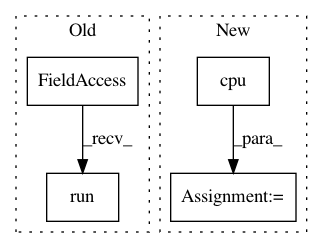

bec15911e08fe5fe3c705c24a23cfd926cc0da95,service.py,LabelService,label,#LabelService#Any#,33
Before Change
A (most likely label, probability) tuple
output = self.sess.graph.get_tensor_by_name("labels_softmax:0")
predictions, = self.sess.run(output, {"wav_data:0": wav_data})
return (self.labels[np.argmax(predictions)], max(predictions))
def encode_audio(wav_data):
After Change
wav_data = np.frombuffer(wav_data, dtype=np.int16) / 32768.
model_in = model.preprocess_audio(wav_data, 40, self.filters).unsqueeze(0)
model_in = torch.autograd.Variable(model_in, requires_grad=False).cuda()
predictions = F.softmax(self.model(model_in).squeeze(0).cpu()).data.numpy()
return (self.labels[np.argmax(predictions)], max(predictions))
def set_speech_format(f):
f.setnchannels(1)
In pattern: SUPERPATTERN
Frequency: 3
Non-data size: 4
Instances
Project Name: castorini/honk
Commit Name: bec15911e08fe5fe3c705c24a23cfd926cc0da95
Time: 2017-10-05
Author: tang.raphael@gmail.com
File Name: service.py
Class Name: LabelService
Method Name: label
Project Name: HyperGAN/HyperGAN
Commit Name: 365c861ccac7588596907b0cff8ddf69cc7a966c
Time: 2020-07-27
Author: mikkel@255bits.com
File Name: hypergan/samplers/grid_sampler.py
Class Name: GridSampler
Method Name: _sample
Project Name: HyperGAN/HyperGAN
Commit Name: 345fce3d67cafe3a1728b177d376193f48efd4bd
Time: 2020-02-17
Author: mikkel@255bits.com
File Name: hypergan/samplers/batch_walk_sampler.py
Class Name: BatchWalkSampler
Method Name: __init__